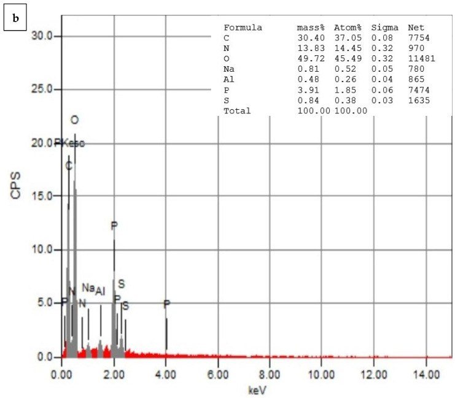
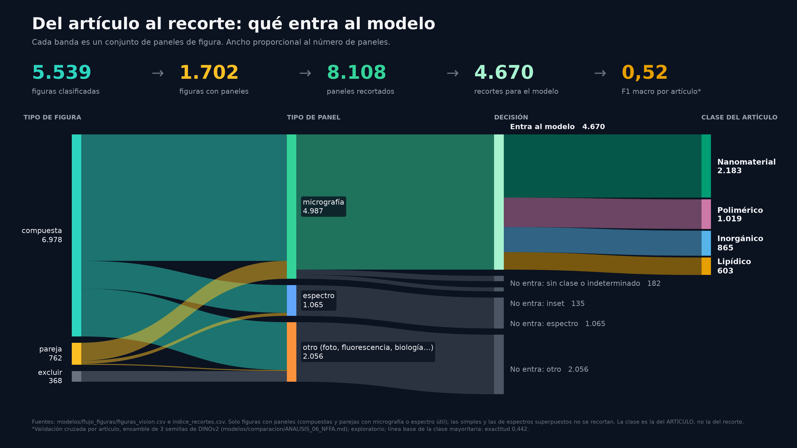
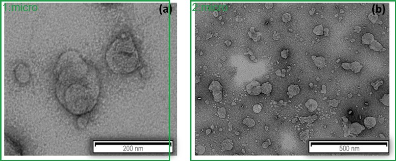
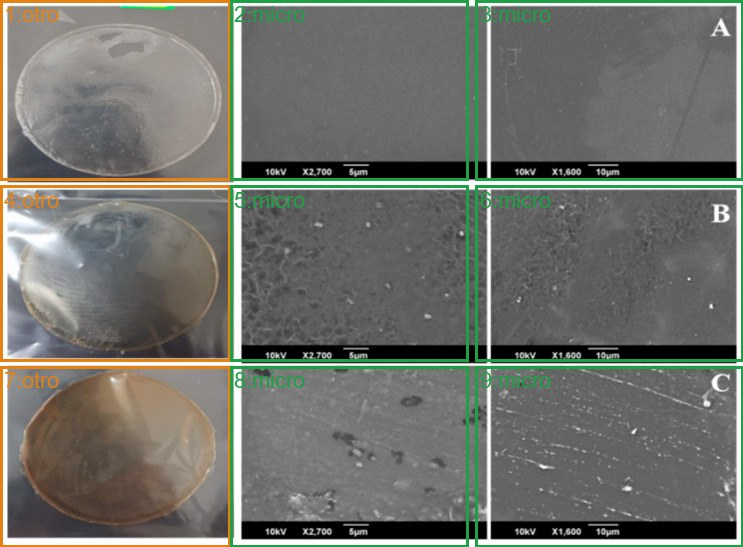
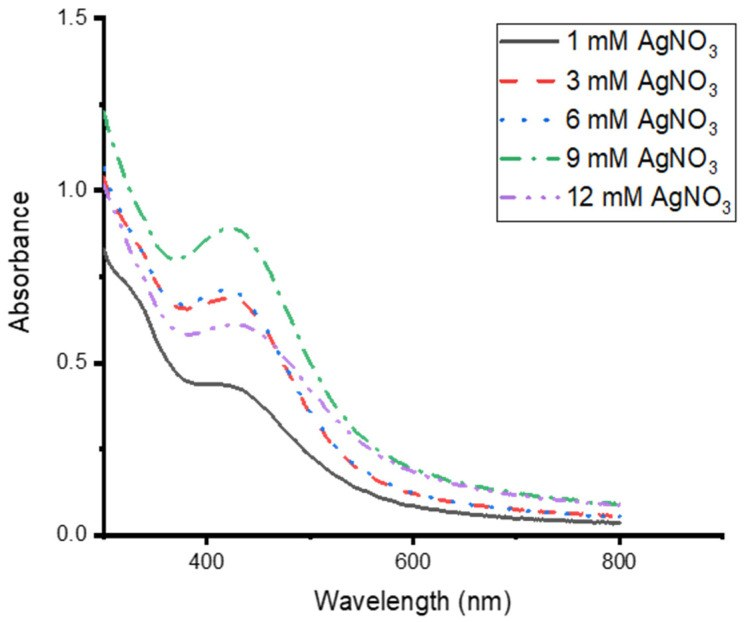
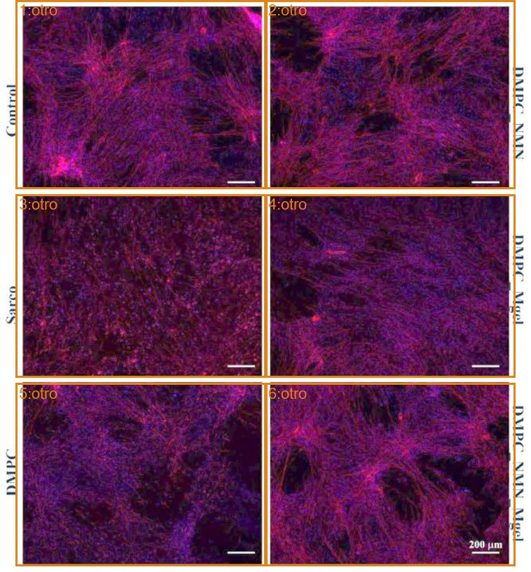

Simple
Una micrografía o un espectro. Se conserva como una unidad; si es una micrografía de partículas elegible, puede aportar un recorte al modelo.

DOI: 10.3390/pharmaceutics15112551 · Licencia: CC BY.
TRAZABILIDAD · DECISIONES D1–D8
Leímos 1.824 artículos de acceso abierto sobre nanoportadores y nanomateriales. En 1.707 encontramos evidencia útil. Cada dato conserva la cita textual del artículo de donde sale y un programa comprueba que esa cita existe.
Las decisiones D1–D8 conservan la historia de la base v0.1. El flujo visual posterior añade clasificación de figuras, cajas y recortes; sus comprobaciones y límites se muestran por separado.
FLUJO REPRODUCIBLE

Fuente: figuras/modelos/fig_hero_flujo_es.svg; generada a partir de los CSV del flujo de figuras.
PASO A PASO · ARCHIVOS FUENTE
Conjunto v0.1 con evidencia E1/E2, de Europe PMC y con criterio de acceso abierto.
curation/v0.1/RESUMEN_NUMEROS.jsonPaneles, medidas y espectros se conservan como registros separados y ligados al artículo.
curation/ext_paneles.csv · curation/ext_descriptores.csv · curation/ext_espectros.csvLa validación contrasta la cita y los números asociados con el texto fuente. Los valores sin respaldo no se presentan como verificados.
curation/extended.py · curation/v0.1/filas_unidas.csvSe registra la tipología/destino visual, técnica y estado de revisión de cada figura del índice.
modelos/flujo_figuras/figuras_vision.csvLas cajas se guardan con coordenadas normalizadas y etiquetas de tipo, contenido, clase y elegibilidad.
modelos/flujo_figuras/segmentacion/cajas/indice_recortes.csvLa auditoría a ciegas acertó el número de paneles en 47 de 48 figuras. La comparación de cajas de Haiku con las humanas obtuvo IoU 0,89 en 22 figuras (120 paneles) bajo el mismo criterio. Son verificaciones parciales, no una medida de exactitud global.
modelos/flujo_figuras/PROGRESO.md · equipo/ESTADO_FIGURAS_24OCT_NOCHE.mdCINCO DESTINOS · EJEMPLOS CON CAJAS
La clasificación visual separa las figuras por su composición. Las cajas marcan micrografías en verde, espectros en azul y otros contenidos en naranja. Se consolidaron mediante revisión visual asistida por IA y reglas; el destino de una figura no convierte todos sus paneles en micrografías aptas para el modelo.
Una micrografía o un espectro. Se conserva como una unidad; si es una micrografía de partículas elegible, puede aportar un recorte al modelo.

Dos paneles útiles. Se separan sus cajas y se conserva el vínculo con la figura original; cada panel se evalúa según su tipo y contenido.

Tres o más paneles, o una composición con contenido no útil. Se separan las cajas; solo pasan al modelo los recortes que cumplen los criterios de micrografía de partículas.

Un espectro con varias curvas que se solapan en los mismos ejes. Se conserva como un panel de espectro superpuesto; no se divide cada curva como si fuera una imagen independiente ni entra al modelo de micrografías.

Una figura sin micrografías de partículas ni espectros útiles para este objetivo. Se conserva su trazabilidad en el índice, pero no se usa como entrada del modelo de micrografías.

Créditos de los artículos: descargar creditos.csv. Cajas: revisión visual con IA (Claude/Haiku/Codex), consolidada por reglas. Definiciones: flujo de revisión visual.
CRITERIO PARA EL MODELO DE IMAGEN
Se consideran para morfología únicamente micrografías de partículas de nivel superior con etiqueta de clase y elegibilidad explícita. Se excluyen insets, espectros, fluorescencia o histología y paneles biológicos. La regla se deriva de las columnas del índice; no se infiere desde la apariencia aislada de la miniatura.
La muestra se arma en el navegador con recortes existentes del índice, agrupados por clase, y conserva el PMCID y la figura de origen.
Cargando muestra de recortes…
Se seleccionan artículos con licencia CC BY y un artículo CC0 para poder redistribuir las imágenes y los datos con crédito al DOI.
Evidencia: validación de la puerta de licencia ↗Las citas textuales y los valores asociados se comprueban por código contra el texto fuente; la extracción conserva una ruta de vuelta al artículo.
Evidencia: validación de citas en el proceso de extracción ↗Se excluyen virus usados como portadores. Sí se incluyen nanopartículas dirigidas contra virus o que llevan antígenos; la palabra «virus» en el título no decide por sí sola la inclusión.
Evidencia: acuerdo de alcance y casos conservados ↗E1 requiere micrografía, medidas y espectro. E2 requiere micrografía junto con medidas o espectro. La v0.1 contiene 1.130 artículos E1 y 577 E2.
Evidencia: conteos del conjunto v0.1 ↗Las medidas se aceptan bajo cualquier licencia; las imágenes se muestran solo cuando su licencia permite su reutilización. Cada ficha enlaza al DOI del artículo.
Evidencia: registro de decisiones, apartado D5 ↗La línea base v0.1 se evaluó con figuras completas. Los experimentos posteriores con recortes son preliminares: cambian el número de vistas por artículo y no sustituyen la cifra de referencia de la v0.1.
Evidencia: registro de decisiones, apartado D6 ↗La clasificación del modelo usa cuatro clases: lipídico, polimérico, inorgánico y nanomaterial. El registro advierte que nanomaterial e inorgánico pueden solaparse.
Evidencia: etiquetas por artículo de la tabla de modelo ↗La revisión de 20 artículos fue asistida por IA; las columnas de decisión humana permanecen vacías. Sobre lo comprobable: micrografías 19/19, descriptores 9/10 y espectros 14/16. La muestra es pequeña y no estima la precisión global; «no comprobable» no equivale a error.
Evidencia: resumen del control de calidad ↗